Menjadi perusahaan yang dapat memenuhi kebutuhan industri dan komersial.
CV. ARSHAKA MANDIRI PERKASA · General Supplier & Engineering Services
More than a supplier.
Your partner in industrial solutions.
From general procurement to mechanical engineering services, CV Arshaka Mandiri Perkasa supports your business with reliable supply solutions, technical products, and equipment maintenance services.
Dari pengadaan barang hingga layanan perbaikan mekanikal, CV Arshaka Mandiri Perkasa hadir sebagai mitra kebutuhan industri, pertanian, perkebunan, pertambangan dan sektor komersial.
Your trusted partner for industrial, commercial & automotive needs.
01 · Procurement
General Procurement & Supply
Pengadaan sparepart, peralatan teknik, material industri & kebutuhan operasional untuk pertanian, perkebunan, pertambangan, industri, dan komersial.
Lihat cakupan pengadaan → 02 · IndustrialIndustrial Mechanical Services
Pemeriksaan, perbaikan, dan pemeliharaan genset, pompa industri, valve, serta fitting & piping.
Lihat layanan industrial → 03 · AutomotiveAMP Auto Service
Bengkel mobil dan pencucian: servis berkala, perbaikan, booking WhatsApp, dan aplikasi Android.
Lihat layanan otomotif →About Us
CV. Arshaka Mandiri Perkasa
CV Arshaka Mandiri Perkasa merupakan perusahaan yang bergerak di bidang pengadaan barang (General Supplier), Electrical, Mechanical, Instrument dan General Trading.
Kami menyediakan berbagai kebutuhan perusahaan, industri, pertanian, perkebunan, pertambangan dan sektor komersial, termasuk sparepart kendaraan, alat berat, mesin, peralatan teknik, material industri, serta kebutuhan operasional perusahaan.
Selain pengadaan barang, CV AMP juga mengembangkan layanan perbaikan dan pemeliharaan peralatan mekanikal serta layanan otomotif melalui AMP Auto Service.
- Bentuk usahaCV (Commanditaire Vennootschap)
- BidangSupplier Electrical, Mechanical, Instrument and General Trading
- DomisiliKota Banjarmasin, Kalimantan Selatan
- Dapat memberikan pelayanan terbaik untuk jasa supply barang / sparepart dengan harga, kualitas dan waktu pengiriman yang kompetitif.
- Senantiasa berinovasi dan meningkatkan pelayanan untuk memaksimalkan kepuasan customer.
DirekturMarina Devianti
KomisarisSilvia Ariyanti
Bidang usaha sesuai KBLI 2020 (dari company profile)
45201 Reparasi mobil
45301 Perdagangan besar suku cadang dan aksesori mobil
45405 Perdagangan besar suku cadang sepeda motor dan aksesorinya
45407 Reparasi dan perawatan sepeda motor
46100 Perdagangan besar atas dasar balas jasa (fee) atau kontrak
46339 Perdagangan besar makanan dan minuman lainnya
46421 Perdagangan besar alat tulis dan gambar
46491 Perdagangan besar peralatan dan perlengkapan rumah tangga
46521 Perdagangan besar suku cadang elektronik
46591 Perdagangan besar mesin kantor dan industri pengolahan, suku cadang dan perlengkapannya
46593 Perdagangan besar alat transportasi darat (bukan mobil, sepeda motor, dan sejenisnya), suku cadang dan perlengkapannya
46639 Perdagangan besar bahan konstruksi lainnya
46900 Perdagangan besar berbagai macam barang
Ringkasan Layanan Usaha
Komitmen kami kepada pelanggan
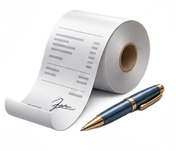
Tanggung jawab & kejujuran
Menjaga tanggung jawab dan kejujuran kepada pelanggan — kondisi barang, pekerjaan, dan biaya disampaikan apa adanya.
SOP standar Indonesia
Menjalankan SOP dengan standar Indonesia — setiap tahap pekerjaan dicatat dan diperiksa.
Pelayanan sepenuh hati
Memberikan pelayanan dengan hati, penuh sikap dermawan, ramah, dan sabar menjelaskan.
Tuntas & terpercaya
Sedia mengatasi masalah pelanggan dengan penuh tanggung jawab dan menjaga kepercayaan.
Division 01 · General Procurement & Supply
Pengadaan untuk setiap sektor usaha
CV AMP melayani pengadaan berbagai kebutuhan perusahaan untuk sektor pertanian, perkebunan kelapa sawit, pertambangan batu bara, industri, dan komersial.
Pertambangan batu baraPerkebunan kelapa sawitPertanianIndustri & komersial
Agriculture & Farming
- Sparepart farm tractor
- Sparepart mesin pertanian
- Komponen mesin pengolahan hasil pertanian
- Peralatan dan perlengkapan pertanian
- Material pendukung operasional pertanian
Plantation & Estate
- Sparepart kendaraan operasional perkebunan
- Sparepart alat berat
- Sparepart genset
- Pompa dan komponen perpipaan
- Valve, fitting dan material mekanikal
- Peralatan dan kebutuhan operasional perkebunan
Mining & Heavy Equipment
- Sparepart dump truck
- Sparepart alat berat
- Komponen mesin diesel
- Sparepart genset
- Hydraulic dan mechanical components
- Bearing, seal dan komponen teknik
- Valve, fitting, pipa dan material pendukung
- Peralatan workshop dan kebutuhan operasional pertambangan
Industrial & Commercial Supply
- Electrical equipment
- Mechanical equipment
- Instrumentation components
- Industrial valves — Ball Valve dan Gate Valve
- Pipa dan fitting
- Besi dan material konstruksi
- Industrial tools & building materials
- General office and operational supplies
- Berbagai kebutuhan pengadaan perusahaan lainnya
General Trading
- Perdagangan berbagai macam barang
- Pengadaan barang berdasarkan permintaan customer
- Sourcing produk dari distributor, principal dan supplier
- Pengadaan berdasarkan spesifikasi teknis dan kebutuhan proyek
Seluruh produk ditawarkan berdasarkan ketersediaan, spesifikasi, dan kemampuan pengadaan — tidak semua barang merupakan stok sendiri.
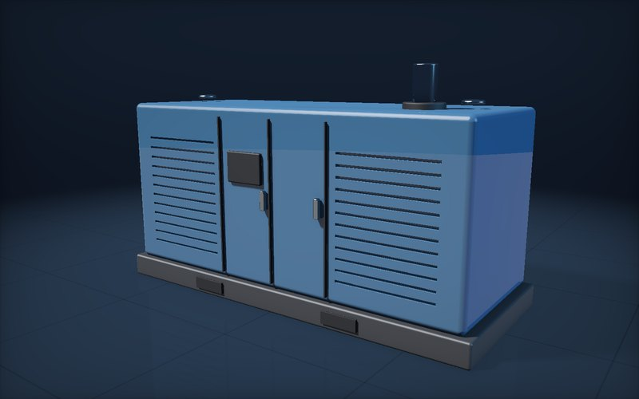
Genset & Generator
Perawatan berkala dan penanganan gangguan mekanikal genset agar siap dipakai saat dibutuhkan.
- Pemeriksaan dan perawatan genset
- Troubleshooting sistem mekanikal
- Perbaikan komponen mesin
- Preventive maintenance
Industrial Pump
Pemeriksaan dan perbaikan pompa industri, dari kebocoran hingga komponen putar.
- Pemeriksaan dan perbaikan pompa
- Troubleshooting kebocoran
- Pemeriksaan bearing dan mechanical seal
- Maintenance dan overhaul sesuai kebutuhan
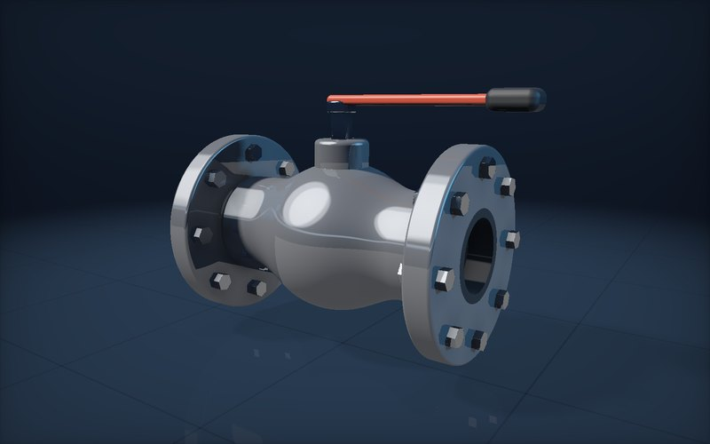
Industrial Valve
Pemeriksaan kondisi dan fungsi valve untuk menjaga aliran tetap terkendali.
- Pemeriksaan kondisi valve
- Perbaikan dan maintenance valve
- Pemeriksaan kebocoran
- Pemeriksaan fungsi mekanikal
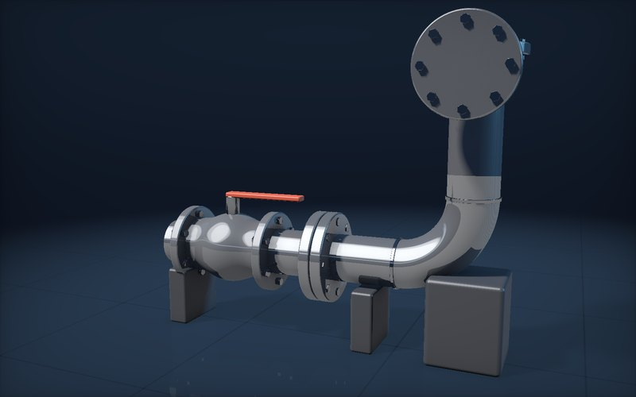
Fitting & Piping Components
Penanganan sambungan, fitting, dan instalasi perpipaan mekanikal.
- Pemeriksaan fitting dan sambungan pipa
- Penggantian komponen
- Penanganan kebocoran
- Pemeriksaan kondisi instalasi mekanikal
Konsultasikan Kebutuhan Anda via WhatsApp
Ceritakan jenis peralatan, gejala, dan lokasi. Tim kami akan menindaklanjuti untuk pemeriksaan.
Division 03 · Automotive Services
Drive Better,
Go Further
Bengkel mobil dan pencucian AMP Auto Service — servis berkala, perbaikan, dan perawatan kendaraan dengan pencatatan digital, dari booking, inspeksi, sampai status pekerjaan bisa dipantau.
- Sistem kendaraan
- –
- Item pemeriksaan
- –
- Promo aktif
- –
Automotive · AMP Auto Service
Brosur AMP Auto Service
Ringkasan layanan, keunggulan, alur servis, dan jam operasional bengkel. Klik gambar untuk melihat ukuran penuh.


Automotive · Promo berjalan
Penawaran aktif dari bengkel
Promo dibuat di AMP Management System dan otomatis tampil di website serta menu Promo aplikasi AMP Auto Service. Klaim promo lewat aplikasi Android.
Automotive · Layanan bengkel
Sistem kendaraan yang kami tangani
Daftar pekerjaan standar dari katalog jasa AMP. Biaya final ditentukan setelah inspeksi dan disetujui pelanggan.
Garansi jasa 500 km / 14 hari untuk pekerjaan yang tercantum pada nota servis, sesuai ketentuan. Lihat ketentuan garansi · Kenapa memilih AMP?
Automotive · Kenapa AMP
Kenapa Memilih AMP Auto Service?
Your Car Deserves Better Care.
Kami percaya perawatan kendaraan bukan sekadar memperbaiki kerusakan. Tetapi memberikan solusi yang tepat, transparan, dan dapat dipertanggungjawabkan.
01
Inspeksi Sebelum Perbaikan
- Kendaraan diperiksa terlebih dahulu.
- Membantu mengidentifikasi sumber permasalahan.
- Memberikan rekomendasi tindakan berdasarkan hasil pemeriksaan.
- Tidak langsung mengganti komponen tanpa dasar pemeriksaan.
02
Transparansi Biaya
- Estimasi biaya disampaikan sebelum pekerjaan dimulai.
- Pelanggan mendapatkan informasi pekerjaan yang diperlukan.
- Pekerjaan tambahan harus dikonfirmasikan terlebih dahulu.
- Tidak melakukan pekerjaan tambahan tanpa persetujuan pelanggan.
03
Multi-Brand Automotive Service
- Melayani berbagai merek kendaraan.
- Servis berkala.
- Tune up.
- Perbaikan mesin.
- Sistem kelistrikan.
- OBD ECU scanning.
- Perbaikan kaki-kaki dan sistem pengereman.
04
Dokumentasi Pekerjaan
- Dokumentasi kondisi kendaraan.
- Informasi hasil pemeriksaan.
- Catatan pekerjaan yang dilakukan.
- Informasi penggantian komponen.
- Riwayat pekerjaan melalui sistem AMP.
05
Pengerjaan Terukur
- Mengikuti tahapan pemeriksaan dan pengerjaan.
- Mengutamakan ketepatan tindakan perbaikan.
- Melakukan pemeriksaan hasil pekerjaan.
- Menginformasikan hasil servis kepada pelanggan.
06
Digital Customer Service
- Booking servis secara online.
- Konsultasi dengan AMP.
- Pemantauan status Work Order.
- Riwayat servis kendaraan.
- Informasi tagihan dan pembayaran.
- Notifikasi perkembangan pekerjaan melalui aplikasi Customer AMP.
Jangan menebak kerusakan kendaraan Anda.
Konsultasikan bersama AMP Auto Service.
Sudah punya akun? Konsultasi juga bisa lewat akun AMP atau aplikasi Android, termasuk kirim foto kendaraan.
Garansi Servis500 KM / 14 HARISesuai ketentuan
Automotive · Kebijakan garansi
AMP Auto Service – Warranty Terms & Conditions
Terima kasih telah mempercayakan perawatan dan perbaikan kendaraan Anda kepada AMP Auto Service.
Siapkan nota transaksi saat menanyakan atau mengajukan garansi.
Ketentuan Garansi
- Garansi jasa perbaikan berlaku hingga 500 km pemakaian atau 14 hari kalender sejak tanggal faktur, mana yang tercapai lebih dahulu, khusus untuk pekerjaan yang tercantum pada nota servis.
- Garansi mencakup perbaikan ulang tanpa biaya apabila kerusakan terbukti disebabkan oleh kesalahan pengerjaan atau pemasangan oleh teknisi AMP Auto Service.
- Garansi spare part mengikuti ketentuan garansi resmi dari produsen atau distributor.
- Garansi tidak berlaku untuk kerusakan akibat kecelakaan, benturan, penyalahgunaan kendaraan, modifikasi pihak lain, atau kerusakan komponen lain yang tidak termasuk dalam pekerjaan servis.
- Setiap klaim garansi wajib disertai nota transaksi dan kendaraan akan melalui pemeriksaan terlebih dahulu oleh teknisi AMP Auto Service.
- Apabila ditemukan kerusakan yang tidak berkaitan dengan pekerjaan sebelumnya, biaya perbaikan akan diinformasikan dan dikonfirmasikan kepada pelanggan terlebih dahulu.
KEPUASAN DAN KEPERCAYAAN ANDA ADALAH PRIORITAS KAMI.
AMP Auto Service – Drive Better, Go Further.
Automotive · Cara booking
Pilih jalur yang paling nyaman
Isi formulir singkat, lalu pesan booking otomatis tersusun di WhatsApp. Admin akan membalas untuk konfirmasi jadwal.
- Isi data kendaraan & keluhan
- Tekan Kirim ke WhatsApp
- Tunggu konfirmasi admin
Akun AMP di website
Masuk dengan akun yang sama seperti aplikasi Android. Booking langsung tercatat dan diproses oleh bengkel.
- Masuk / daftar akun
- Tambahkan kendaraan & booking
- Pantau status, tagihan & konsultasi
Aplikasi AMP (Android)
Daftar akun, simpan kendaraan, booking, lalu pantau status servis. Booking dari aplikasi langsung masuk ke sistem bengkel.
- Pasang aplikasi & daftar akun
- Tambahkan kendaraan
- Booking & pantau tracking servis
Tahapan servis yang tercatat
- 1Booking
- 2Kendaraan diterima
- 3Inspeksi
- 4Dikerjakan
- 5Pemeriksaan akhir
- 6Siap diambil
- 7Selesai
Status di aplikasi mengikuti Work Order di sistem bengkel — hanya tahap yang benar-benar tercatat yang ditampilkan.
AMP Customer App
Bengkel di genggaman Anda
- Booking servis — datang ke bengkel atau layanan panggilan
- Garasi digital: simpan beberapa kendaraan & odometer
- Tracking status servis dari Work Order
- Konsultasi dengan bengkel, termasuk kirim foto
- Tagihan, unggah bukti transfer, dan riwayat servis
- Saran & komplain langsung ke admin
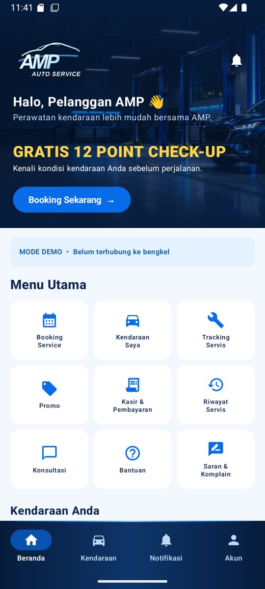
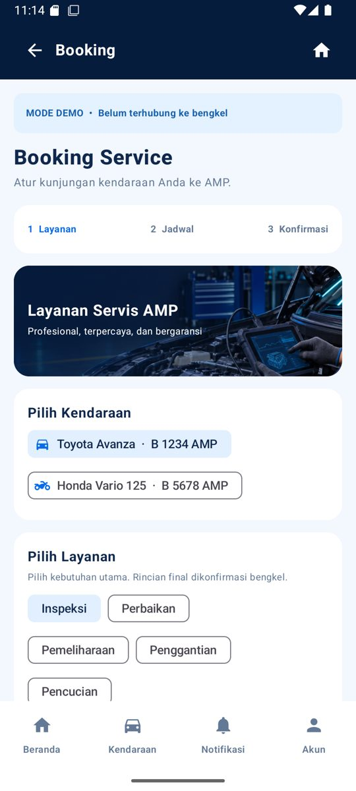
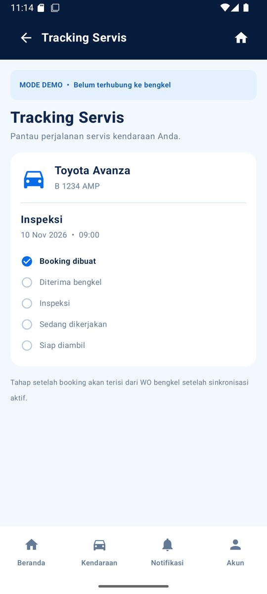
Automotive · Tanya jawab
Pertanyaan seputar layanan bengkel
Apakah harus pakai aplikasi untuk booking?
Tidak. Booking bisa lewat WhatsApp tanpa akun. Aplikasi memberi nilai tambah: tracking status, riwayat servis, dan tagihan.
Apakah booking WhatsApp langsung terkonfirmasi?
Belum. Pesan WhatsApp adalah permintaan booking; jadwal dianggap pasti setelah admin membalas dan mengonfirmasi.
Berapa biaya servisnya?
Biaya bergantung pada hasil inspeksi, jasa, dan suku cadang. Estimasi biaya disampaikan sebelum pekerjaan dimulai.
Apakah aplikasi sudah ada di Play Store?
Belum. Saat ini aplikasi tersedia sebagai APK Android yang dapat diunduh dari website ini. Versi Play Store akan diumumkan kemudian.
Apakah ada garansi servis?
Ada. Garansi jasa perbaikan berlaku hingga 500 km pemakaian atau 14 hari kalender sejak tanggal faktur, mana yang tercapai lebih dahulu, khusus untuk pekerjaan yang tercantum pada nota servis. Ketentuan lengkap ada di bagian Kebijakan Garansi.
Bagaimana dengan pembayaran?
Pembayaran dilakukan setelah pekerjaan selesai. Bukti transfer yang diunggah lewat aplikasi menunggu verifikasi admin.
Our Products
Kategori produk & cakupan merek
Produk yang dapat kami supply berdasarkan permintaan dan spesifikasi customer.
Sparepart kendaraan, alat berat & mesin diesel
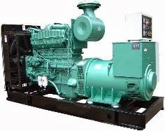
Genset & sparepart genset
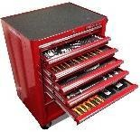
Industrial tools & peralatan workshop
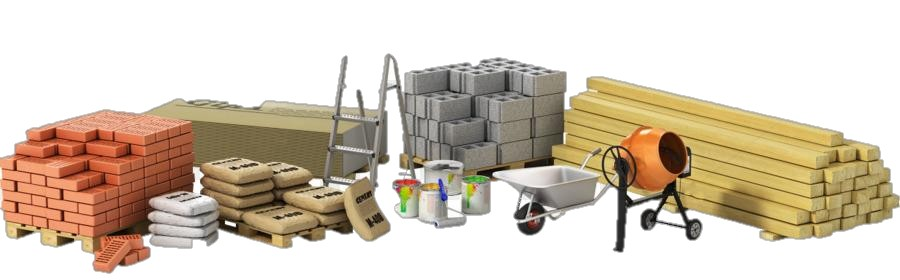
Besi, material konstruksi & bahan bangunan
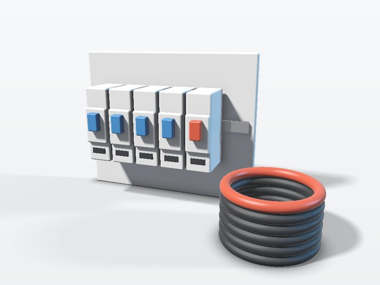
Electrical equipment
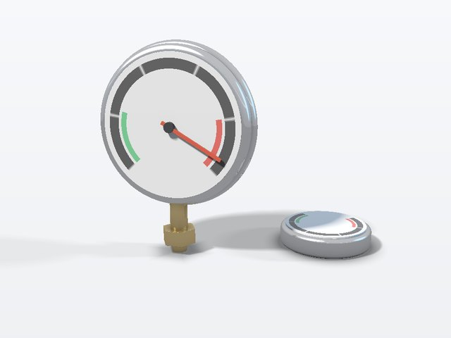
Instrumentation components
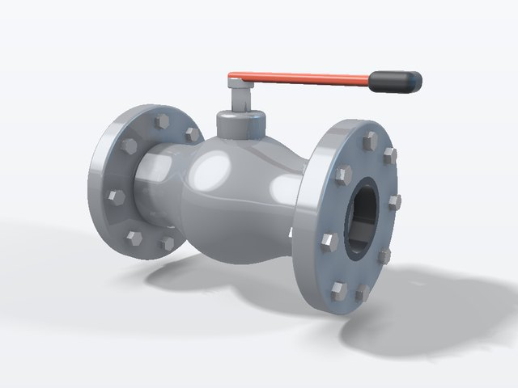
Industrial valves — Ball & Gate Valve
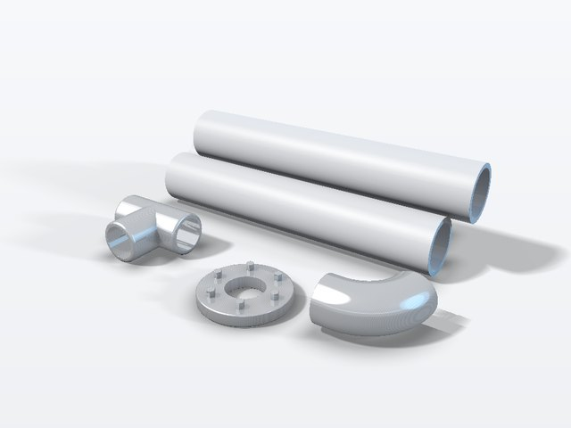
Pipa, fitting & material mekanikal
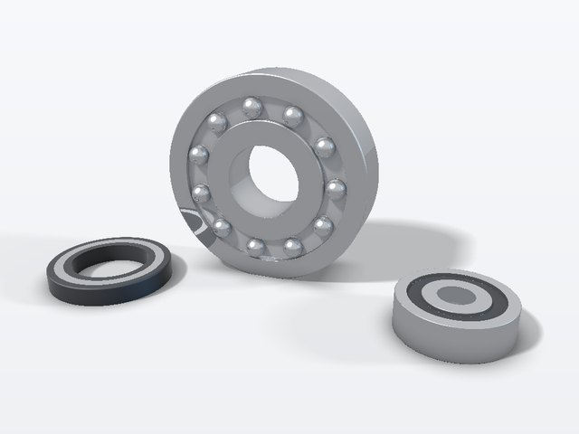
Bearing, seal, hydraulic & mechanical components
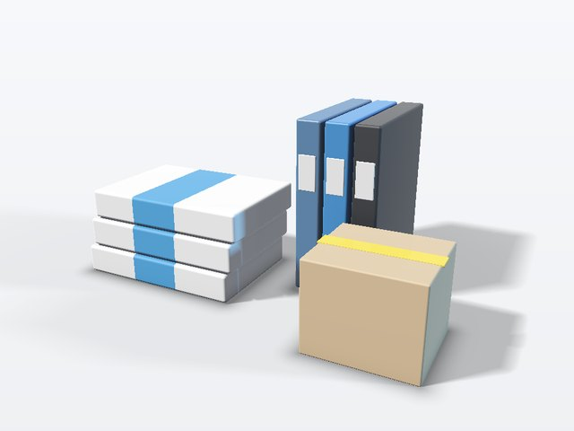
General office & operational supplies
Sparepart truck
MitsubishiHinoToyotaIsuzu
Heavy equipment & agricultural machinery
KomatsuCaterpillarHitachiBomagJohn DeereMassey FergusonLandiniNew HollandPerkinsYanmar
Barang umum — pipa, tools, kabel & bahan bangunan
RucikaTekiroRYUAldoWiproSupremeEternaJembo CablePhilipsNippon PaintGT RadialBridgestone
Merek di atas adalah cakupan pengadaan sparepart dan barang sesuai company profile — bukan klaim sebagai authorized dealer atau distributor resmi. Nama merek adalah milik pemiliknya masing-masing.
Request for Quotation (RFQ)
Minta penawaran pengadaan
Isi kebutuhan barang Anda. Ringkasan permintaan akan tersusun otomatis dan dikirim lewat WhatsApp admin CV AMP.
- Isi data perusahaan & barang
- Tekan Kirim RFQ via WhatsApp
- Lampirkan foto/dokumen spesifikasi di chat WhatsApp
- Admin menindaklanjuti dengan penawaran
Website ini belum menyimpan RFQ di server. Data hanya dipakai untuk menyusun pesan WhatsApp/email di perangkat Anda.
Contact
Mari diskusikan kebutuhan Anda
Pengadaan barang, perbaikan peralatan industri, atau servis kendaraan — hubungi CV AMP.
Lokasi CV Arshaka Mandiri Perkasa
Buka di Google Maps
Peta memerlukan koneksi internet. Buka Google Maps